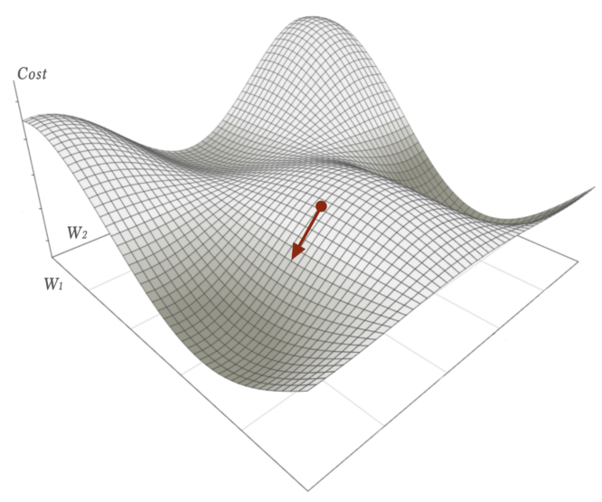

Wx+b = Y.
W is adjusted in steps based on a step function using Gradient Descent.
Has 91% accuracy on MNIST
Canonical Example: Gradient Descent
This cost field is unknown and we can't figure out the global minimum, so we have to walk in steps. But which direction do we walk? We need partial derivatives.

Adam Optimizer is an algorithim, similar to Gradient Descent. These are called optimizers because they provide a means of figuring out what to do to the weights at each step.
Progression
Training:
a. Sample: one example that could be inputted into Wx+b = Y
b. Batch (also called a step): a set of samples that leads to one update to W (batch size of 32 is a good start, but should also try 64, 128, and 256) c. Epoch: when every sample in the training dataset has been run through once (usually run for 10, 100, 500, 1000, and larger)Validation:
a. Find better hyperparams (could be after n epochs) using this dataset
b. Create new model from scratch with new hyperparams and re-run training phaseTest:
a Measure performance of best model against this set
b. No automated model creation after this
"Steps"
- Grab a batch of data
- Calculate the partial derivative of each data point given the W
- Move the weights the step increment in the direction that reduces cost
"Cost"
Using MNIST as example:
- sample is (pixels,ground-truth label) for each image
- y-estimate = Mx + b, where x is pixels
- y-actual = label
- cost = y-estimate - y-actual
Mini-Batch
- Batch Gradient Descent. Batch Size = Size of Training Set
- Stochastic Gradient Descent. Batch Size = 1
- Mini-Batch Gradient Descent. 1 < Batch Size < Size of Training Set
Backpropagation
Backpropagation is just a way to calculate the first derivative of a cost function.
The goal of backpropagation is to compute the partial derivatives ∂C/∂w and ∂C/∂b of the cost function C with respect to any weight w or bias b in the network"
It's called backpropogatation, because in a multi-layer feedforward network, the weights roll back from the last layer to the first layer.
Sometimes a multilayer feedforward neural network is referred to incorrectly as a back-propagation network. The term back-propagation does not refer to the structure or architecture of a network. Back-propagation is a method for calculating the first derivative, or gradient, of the error function required by some optimization methods.